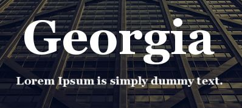
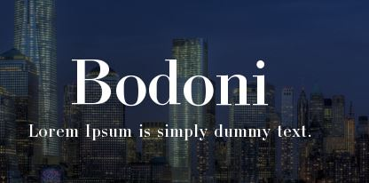
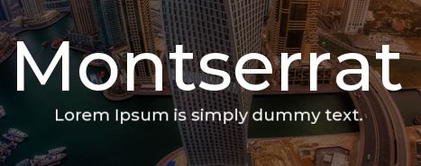
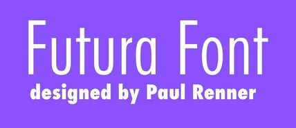
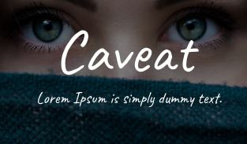
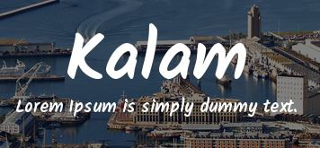

When it comes to creating visual designs there's an array of different font types that a creative can use.
This article will cover only three of the different font types that are out there, and the font types that will be covered are: Serif Fonts, Sans-Serif Fonts, and Handwritten Fonts.
What are Font types? Font types are the different styles and variations of a typeface that can be used in design and typography.
A typeface is a set of characters that share a common design theme.
Serif Fonts
Serif fonts have small decorative strokes "feet" at the ends of the letters. These fonts are typically used in print publishing such as books and newspapers due to their readability factor in print media. Examples of these font types include: Georgia and Bodoni. View more Serif Fonts


Sans-Serif Fonts
Sans-serif fonts don't have "feet" at the ends of the letters and these fonts tend to have a more clean and modern look. These fonts are typically used in digital media such as websites and mobile apps due to their readability factor on screens. Examples of these font types include: Montserrat and Futura.View more Sans-Serif Fonts


Handwritten Fonts
Handwritten fonts tend to replicate the look of handwritting and present as handwritten calligraphy. These fonts are typically used for personal creative projects as they are viewed as less formal and more casual. Examples of these font types include: Caveat and Kalam. View more Handwritten Fonts


In conclusion, there are many different font types that a creative can use to create visually appealing designs. The three font types that were covered in this article are just a few of the many font types that are out there. Each font type has its own unique characteristics and can be used in different ways to create different effects in design.